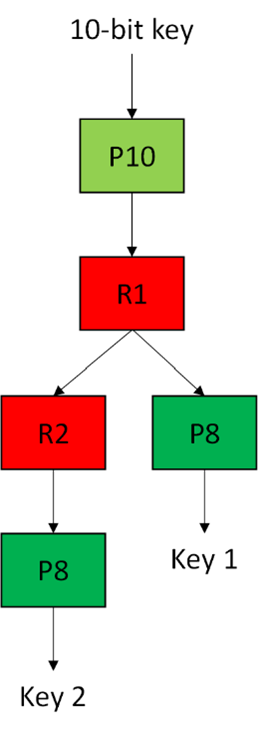
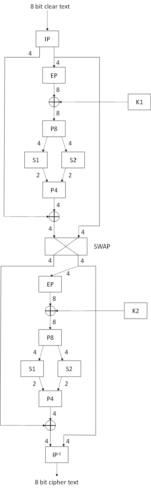
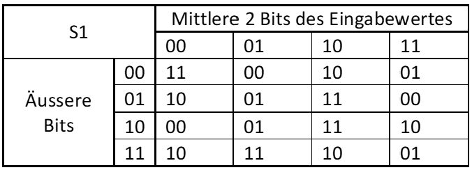
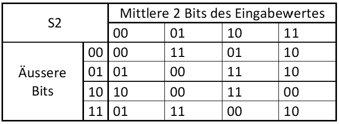

Verschlüsselung
Auf dieser Webpage können Simple-DES und Trösch's Verschlüsselungstechnik interaktiv erfahren werden. Durch die Veranschaulichung durch Schemata und Live-Chiffrierungen kann man ein tiefgründiges Verständnis der Chiffrierungsprozesses erlangen.
Trotzdem ist ein gewisses Mass an Vorwissen erforderlich zum Verständnis der Chiffrierungsprozesse. Dieses kann auf der Webpage Grundlagen und Begriffe erworben werden.
Simple-DES
Schema Simple-DES
Schlüsselerzeugung
Eingabe von selbstgewählten 10 Bits ohne Abstand
Bsp. 0110011011
Permutation
Eine Begriffserklärung der Permutation kann unter Grundlagen und Begriffe gefunden werden.
Positionen nach Permutation:
3,5,2,7,4,10,1,9,8,6
1-Bit-Links-Shift/ Rotation
Ein Beispiel für einen 1-Bit-Links-Shift mit 8 Bits:

Eine genaue Erklärung kann unter Grundlagen und Begriffe nachgelesen werden.
Permutation
Die ersten beiden Bits werden ausgelassen. Die restlichen 8 Bits werden an folgende Positionen gebracht:
6,3,7,4,8,5,10,9
Dies ist nun der erste Schlüssel.
Verschlüsselung
Klartext
Umwandlung in Bits
Pro eingegebenem ASCII druckbaren Zeichen werden im Textfeld 8 Bits ausgegeben.
Wie die Umwandlung von Text in Binärzahlen (Bits) funktioniert und was ASCII druckbare Zeichen sind, kann unter Grundlagen und Begriffe nachgelesen werden.
Initiale Permutation
Eine Begriffserklärung der Permutation kann unter Grundlagen und Begriffe gefunden werden.
Positionen nach Permutation: 2,6,3,1,4,8,5,7
Linke Hälfte der permutierten 8 Bits
Rechte Hälfte der permutierten 8 Bits
Expansion
Die rechte Hälfte der permutierten 8 Bits wird expandiert.
Eine Veranschaulichung der Expansion von 4 auf 8 Bits:

Eine genaue Erklärung kann unter Grundlagen und Begriffe nachgelesen werden.
XOR-Verrechnung mit Schlüssel
Hier ein Beispiel der XOR-Verrechnung mit 4 Bits:
| Eingabe 1 | 0 | 1 | 0 | 1 |
|---|---|---|---|---|
| Eingabe 2 | 1 | 0 | 0 | 1 |
| Ausgabe (nach XOR-Verrechnung) | 1 | 1 | 0 | 0 |
Eine genaue Erklärung kann unter Grundlagen und Begriffe nachgelesen werden.
Verrechnung mit S-Boxen
Zunächst werden die 8 Bits, welche mit dem Schlüssel XOR-verrechnet wurden, in der Mitte aufgeteilt. Anschliessend werden jeweils 4 Bits per S-Box mit 2 Bits substituiert. Zum Schluss werden die beiden Hälften wieder zu 4 Bits zusammengefügt.
Eine genaue Erklärung kann unter Grundlagen und Begriffe nachgelesen werden.
Dies sind die zwei S-Boxen des Simple-DES:


Permutation
Die 4 Bits, die nach der S-Box verrechnung ausgegeben werden, werden hier folgendermassen permutiert:
2,4,3,1
XOR-Verrechnung mit linker Hälfte
Der Wert nach der Permutation wird mit der linken Hälfte vom Anfang XOR-verrechnet.
Zweiter Durchgang
Nun werden gemäss Schema die 4 Bits nach der XOR-Verrechnung genommen und als rechte Hälfte gespeichert. Währenddessen wird die rechte Hälfte vom Anfang neu als linke Hälfte gespeichert. Die neue rechte Hälfte wird nun mit demselben Prinzip wie vorher verrechnet, mit dem Unterschied, dass der Schlüssel diesmal bei der Rotation einen 2-Bit-Links-Shift erfährt und sich so vom ersten unterscheidet. Der einzige Unterschied zum 1-Bit-Links-Shift ist, dass zwei Bits miteinander verschoben werden und nicht nur eins. Die ersten beiden Bits wandern also ans Ende der Bitreihe. (Siehe Schema 1-Bit Links-Shift)
Zum Schluss werden die beiden Hälfte zusammengefügt und es wird die zur initialen Permutation inverse Permutation durchgeführt:
Inverse Initiale Permutation
Dies ist nun der verschlüsselte Text im binären Zahlensystem.
Chiffrentext
Das sind die verschlüsselten Zeichen gemäss ASCII-Codierung: (Die ASCII-Codierung kann hier nachgeschaut werden: www.ascii-code.com.)
Entschlüsselung Simple-DES
Um den Chiffrentext zu Klartext zu dechiffrieren muss beim Chiffrierungsprozess einfach der erste Schlüssel (K1) mit dem zweiten Schlüssel (K2) getauscht werden. Das bedeutet, im ersten Durchgang wird der zweite Schlüssel (K2) XOR-verrechnet und im zweiten Durchgang der erste Schlüssel (K1). Siehe Schema!
Entschlüsselter Binärcode
Entschlüsselter Text
Trösch's Verschlüsselungstechnik
Schlüsselerzeugung

Eingabe von selbstgewählten 12 Bits ohne Abstand
Bsp. 011001101100
Permutation
Eine Begriffserklärung der Permutation kann unter Grundlagen und Begriffe gefunden werden.
Positionen nach Permutation:
4,3,7,1,9,2,8,10,5,12,6,11
2-Bit-Links-Shift/ Rotation
Als Beispiel für die Rotation wird hier das Bild eines 1-Bit-Links-Shifts gezeigt. Der einzige Unterschied des 2-Bit-Links-Shift zum 1-Bit-Links-Shift ist, dass zwei Bits miteinander verschoben werden und nicht nur eins. Die ersten beiden Bits wandern also ans Ende der Bitreihe.
Umgekehrte Expansion
Der Schlüsselcode wird von 12 Bits auf 8 Bits heruntergebrochen, damit er wieder die gleiche Länge bekommt wie der restliche Bitcode. Dies geschieht, indem eine umgekehrte Expansion durchgeführt wird. Das bedeutet, anstatt dass der Bitcode durch die Expansion vergrössert wird, wird er verkleinert.
Permutation
Die entstandenen 8 Bits werden nun an folgende Positionen gebracht:
8,4,2,5,7,1,6,3
Dies ist nun der erste Schlüssel.
Verschlüsselung
Klartext
Umwandlung in Bits
Pro eingegebenem ASCII druckbaren Zeichen werden im Textfeld 8 Bits ausgegeben.
Wie die Umwandlung von Text in Binärzahlen (Bits) funktioniert und was ASCII druckbare Zeichen sind, kann unter Grundlagen und Begriffe nachgelesen werden.
Initiale Permutation
Eine Begriffserklärung der Permutation kann unter Grundlagen und Begriffe gefunden werden.
Positionen nach Permutation: 3,7,2,5,4,8,1,6
Linke Hälfte der permutierten 8 Bits
Rechte Hälfte der permutierten 8 Bits
Expansion
Die rechte Hälfte der permutierten 8 Bits wird expandiert.
Eine Veranschaulichung der Expansion von 4 auf 8 Bits:
Eine genaue Erklärung kann unter Grundlagen und Begriffe nachgelesen werden.
XOR-Verrechnung mit Schlüssel
Hier ein Beispiel der XOR-Verrechnung mit 4 Bits:
| Eingabe 1 | 0 | 1 | 0 | 1 |
|---|---|---|---|---|
| Eingabe 2 | 1 | 0 | 0 | 1 |
| Ausgabe (nach XOR-Verrechnung) | 1 | 1 | 0 | 0 |
Eine genaue Erklärung kann unter Grundlagen und Begriffe nachgelesen werden.
Permutation
Die XOR-verrechneten Bits werden hier, anders als bei Simple-DES, noch einmal permutiert.
Positionen nach der Permutation:
2,7,5,3,8,1,6,4
Verrechnung mit S-Boxen
Zunächst werden die permutierten 8 Bits in der Mitte aufgeteilt. Anschliessend werden jeweils 4 Bits per S-Box mit 2 Bits substituiert. Zum Schluss werden die beiden Hälften wieder zu 4 Bits zusammengefügt.
Eine genaue Erklärung kann unter Grundlagen und Begriffe nachgelesen werden.
Dies sind die zwei S-Boxen von Trösch's Verschlüsselungstechnik:
 Permutation
Die 4 Bits die nach der S-Box verrechnung ausgegeben werden, werden hier folgendermassen permutiert:
3,1,4,2
XOR-Verrechnung mit linker Hälfte
Der Wert nach der Permutation wird mit der linken Hälfte vom Anfang XOR-verrechnet.
Zweiter Durchgang
Nun werden gemäss Schema die 4 Bits nach der XOR-Verrechnung genommen und als rechte Hälfte gespeichert. Währenddessen wird die rechte Hälfte vom Anfang neu als linke Hälfte gespeichert. Die neue rechte Hälfte wird nun mit demselben Prinzip wie vorher verrechnet, mit dem einzigen Unterschied, dass der Schlüssel diesmal bei der Rotation einen 3-Bit-Links-Shift erfährt und sich so vom ersten unterscheidet. Der einzige Unterschied zum 2-Bit-Links-Shift ist, dass drei Bits miteinander verschoben werden und nicht nur zwei. Die ersten beiden Bits wandern also ans Ende der Bitreihe. (Siehe Schema 1-Bit Links-Shift)
Zum Schluss werden die beiden Hälfte zusammengefügt und es wird die zur initialen Permutation inverse Permutation durchgeführt:
Inverse Initiale Permutation
Dies ist nun der verschlüsselte Text im binären Zahlensystem.
Chiffrentext
Das sind die verschlüsselten Zeichen gemäss ASCII-Codierung: (Die ASCII-Codierung kann hier nachgeschaut werden: www.ascii-code.com.)
Entschlüsselung Trösch's Verschlüsselungstechnik
Um den Chiffrentext zu Klartext zu dechiffrieren muss beim Chiffrierungsprozess einfach der erste Schlüssel (K1) mit dem zweiten Schlüssel (K2) getauscht werden. Das bedeutet, im ersten Durchgang wird der zweite Schlüssel (K2) XOR-verrechnet und im zweiten Durchgang der erste Schlüssel (K1). Siehe Schema!